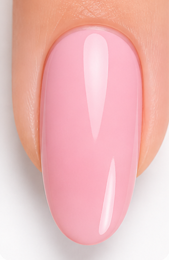
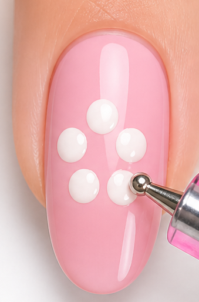
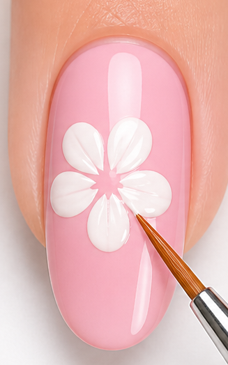
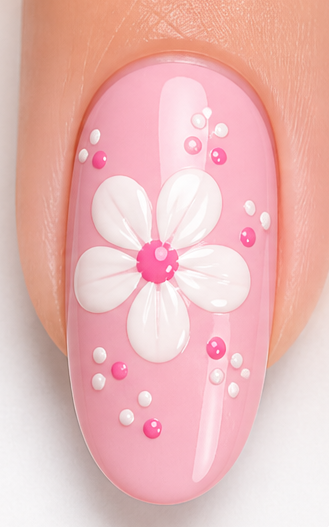

A quick and easy flower design tutorial
Learn how to create a simple and beautiful flower nail art design step by step. Perfect for beginners

Start with a clean nail and apply a base coat.

Use a dotting tool to make small dots.

Drag dots to form petals.

Add top coat for shine